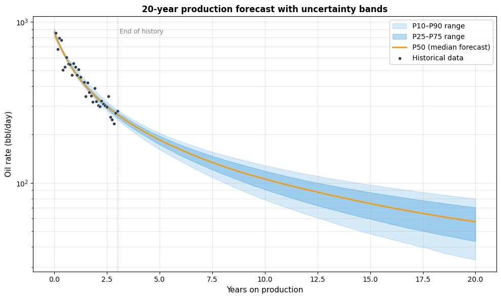

Upstream / Reservoir Engineering
Decline curve analysis & probabilistic reserves
Production forecasting and reserves estimation for oil & gas wells, with Bayesian inference (PyMC) extending the classical Arps framework to handle the b > 1 pathology in unconventional wells.
- Arps decline curves plus modern shale models (Duong, modified hyperbolic, stretched exponential)
- Probabilistic EUR reporting in SPE-PRMS P10 / P50 / P90 convention
- Bayesian fitting with informative priors from analog wells
- 54 passing tests; two demonstration notebooks
